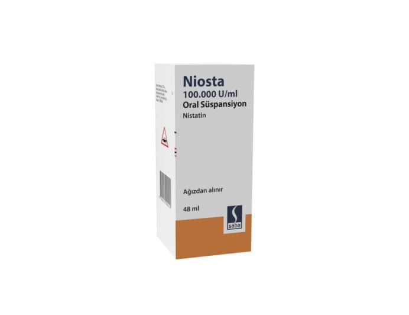

Niosta 100.000 U/ml Oral Süspansiyon, 1 Adet

Ne için kullanılır
KT · Bölüm 1NİOSTA’nın her 1 mL’si 100.000 ünite nistatin içerir.
NİOSTA plastik kapak ile kapatılmış cam şişelerde, damlalıklı kapak ile birlikte kullanıma sunulan açık kremimsi sarı renkli viskoz, homojen (tek düze), kiraz-nane kokulu kolayca yeniden süspanse edilebilen, yabancı partikül içermeyen opak (saydam olmayan) süspansiyondur (katı-sıvı karışım). 60 mL’lik her şişede 48 mL NİOSTA 100.000 U/mL oral süspansiyon bulunur.
NİOSTA antifungal (mantarlara karşı kullanılan ilaçlar) olarak adlandırılan bir ilaç grubuna dahildir.
NİOSTA, ağız, boğaz veya bağırsaktaki mantar enfeksiyonlarını önlemek ve tedavi etmek için kullanılır. Ayrıca, vajinal pamukçuklu annelerin bebeklerinde ağızda pamukçuk oluşumuna karşı etkili koruma sağlar.